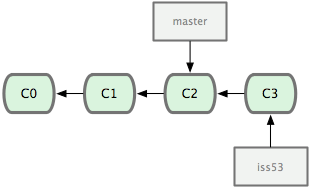
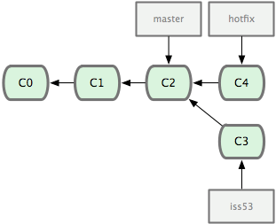

Git et les VCS

Alexandre Rio
not a git guru
dev
packager
http://alexrio.fr
Définition
Un logiciel de gestion de versions (ou VCS en anglais, pour Version Control System) est un logiciel qui permet de stocker un ensemble de fichiers en conservant la chronologie de toutes les modifications qui ont été effectuées dessus.
Wikipedia.org
Distribué ou centralisé
Centralisé
Distribué
- Git (2005)
- Mercurial (2005)
- Bazaar (2005)
Centralisé

Distribué

Mettre en place un projet git
> ls -al
index.html
> git init
> ls -al
index.html
.git/
Intérêts :
- Travailler offline
- Remettre en place un serveur depuis un client
- Naviguer parmi les versions «instantanément»
Git surveille toutes les modifications
mais…
- il faut ajouter les sous-dossiers
- on peut exclure par pattern ( *.class, *.o, …)
- il faut éviter les binaires
Git voit les fichiers sous 4 états
Untracked
État des nouveaux fichiers
Unmodified
Fichiers «Tracked» non modifiés
Modified
Fichiers «Tracked» modifiés.
Staged
Fichiers «Tracked» modifiés prêts à être «sauvés».
En résumé

Pour savoir où on en est
> git status
On branch master
Changes not staged for commit:
(use "git add ..." to update what will be committed)
(use "git checkout -- ..." to discard changes in working directory)
modified: readme
no changes added to commit (use "git add" and/or "git commit -a")
git add <fichier>
Ajouter un nouveau fichier
Le fichier passe de l'état Untracked à Unmodified
Valider les changements d'un fichier
Le fichier passe de l'état Modified à Staged
Sur un dossier tous le contenu sera affecté
Le plus important : git commit
Prend tous les fichiers de la zone Staged et créer un point
de sauvegarde.
Les fichiers impactés redeviennent Unmodified, les autres restent dans
leur état.
À chaque commit est associé un identifiant unique.
À chaque commit est associé un message.
À chaque commit est associé le nom / email de son auteur.
Au fil du temps…

Modifier quelques paramètres
> git config --global user.name "John Doe"
> git config --global user.email johndoe@example.com
L'éditeur utilisé par git commit peut être défini de plusieurs manières:
- via git : git config --global core.editor "/usr/bin/vim"
- via une variable d'environnement : $VISUAL ou $EDITOR
Visualiser les commits
> git log
commit a3b4da4d81d73b3dc4fc4a1b51029c2e14f145b9
Author: Alexandre Rio
Date: Sun May 11 14:53:41 2014 +0200
add src
commit f86b378cfe5c402f78e679d800e92b6be2f4f03b
Author: Alexandre Rio
Date: Sun May 11 14:27:38 2014 +0200
inital commit
Visualiser les différences
> git diff HEAD src/main.java
diff --git a/src/main.java b/src/main.java
index e69de29..138030e 100644
--- a/src/main.java
+++ b/src/main.java
@@ -0,0 +1,3 @@
+public static void main (String[] args) {
+}
+
Visualiser avec une GUI : gitg, gitk…
Revenir en arrière
Oublier un fichier pour un commit
git commit --amend
Prend le contenu de la zone Staged et l'ajoute au dernier commit
git commit -m "change the world"
git add src/mySuperFile.cpp
git commit --amend
Revenir en arrière
Dans les autres cas…
…ça dépend de :
- où on se trouve
- où se trouve le fichier qu'on veut restaurer
Revenir en arrière
Un exemple
git reset --soft HEAD~1
HEAD~1 : le commit avant HEAD ( peut s'écrire HEAD^ )
On peut donner le SHA-1 du commit, ou juste les premiers caractères
--soft nous remet dans l'état avant l'ajout en Staged
--hard aurait supprimé les modifications
Plein de fonctionnalités mais encore trop peu…
Travailler avec un serveur ( repository)
> git remote -v
>
Différents protocoles
- local
- http(s)
- ssh ← <3
- git
Mettre en place un serveur
- Solution toute faite : Github, Bitbucket…
- Sur son serveur :
mkdir projet.git && cd projet.gitgit --bare init
Récupérer *toutes* les données
- Lecture seule :
git clone https://github.com/AlexandreRio/nfo-modifier.git
- Lecture et écriture :
git clone git@github.com:AlexandreRio/nfo-modifier.git
Si on vient de le créer
git remote add origin git@github.com:AlexandreRio/nfo-modifier.git
origin est par convention le nom que l'on donne au remote
protocole git pour pouvoir envoyer des données sur le serveur
On a donc un serveur en place…
Des données ( commits ) en local…
Envoyer les données c'est simple :
git push origin master
Pourquoi avoir plusieurs branches ?
- Avoir plusieurs états d'un même projet ( stable, unstable)
- Corriger un bug alors que l'on modifie des fichiers
- Travailler à plusieurs
Avec une branche

> git branch iss53
> git checkout iss53
Avec deux branches

Maintenant si on fait un commit

On se replace sur master ( git checkout master )
on fait encore une nouvelle branche ( git checkout -b hotfix )
et un nouveau commit.

Recoller les morceaux
> git checkout master
> git merge hotfix
Un merge simple

On supprime la branche inutile
git branch -d hotfix

En théorie, on merge de la même manière
> git checkout master
> git merge iss53

Puis on supprime la branche, de la même manière
On pratique, on peut avoir des conflits à régler
CONFLICT (content): Merge conflict in index.html
Automatic merge failed; fix conflicts and then commit the result
Git fait ce qu'il peut, nous laisse corriger le reste, puis commit.
Les fichiers en conflits
<<<<<<< HEAD
<div id="footer">contact : email.support@github.com</div>
=======
<div id="footer">
please contact us at support@github.com
</div>
>>>>>>> iss53
On garde ce qu'on veut, puis on staged le fichier ( git add
) puis on commit.
On a dit tout est local
Si on veut les branches sur le serveur, il faut les «push».
git push origin testing
Et finalement pour récupérer les données
git fetch origin
Récupère toutes les branches
Afficher les branches locales
git branch
Afficher les branches distantes
git branch -r
Quelques commandes utiles
git tag -a "1.0" Annote le commit HEADgit blame file.java Affiche qui a modifié le fichier
Les hooks
- côté client après un commit
- côté serveur après un push
/